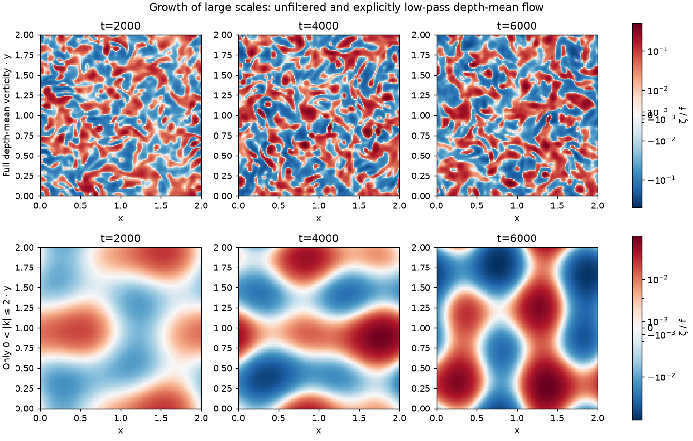
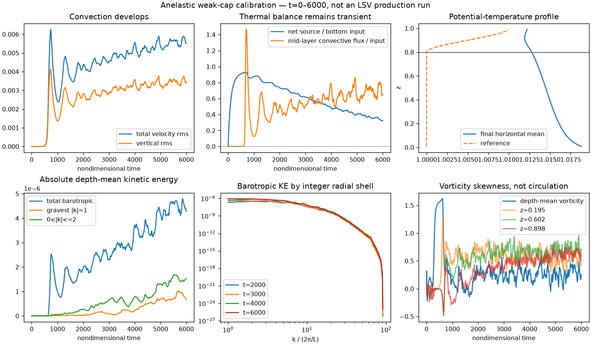

Anelastic convection through t=6000
New full evolution available: Watch t=0–12000 and read the updated analysis. This page preserves the earlier t≤6000 assessment.
Large scales are growing, but an anticyclonic LSV is not established. The run remains thermally transient and the intended stable cap is partly eroded. This is progress toward a large-scale flow, not yet a clean sign-selection experiment.
· Open full movie · Read the analysis ↓
All 1201 saved frames, t=0–6000 nondimensional, not Earth days. Vorticity above passive tracer, at z=0.1953, 0.6016 and 0.8984. Positive ζ/f (red) is cyclonic. Fixed scales across all times and depths; tracer color contrast fades as the saved concentration becomes nearly uniform. No per-frame rescaling.
What the longer run shows
The unchanged weak-cap baseline has now accumulated 31.82 convective turnovers, compared with 6.71 at t=2000, using ∫urmsdt/0.8. The continuation from t=2000 to 6000 completed in 28 min 49 s on one A100-SXM4-80GB, including initialization and validation. Analysis and rendering took 3 min 42 s in a separate Unity CPU job. No new simulation was launched for this publication.
| Diagnostic (instantaneous) | t=2000 | t=4000 | t=6000 |
|---|---|---|---|
| Total depth-mean kinetic energy | 1.97×10−6 | 3.69×10−6 | 4.28×10−6 |
| Gravest |k|=1 energy | 2.39×10−8 | 2.13×10−7 | 6.57×10−7 |
| Gravest fraction of depth-mean energy | 1.21% | 5.76% | 15.34% |
| Energy fraction in 0<|k|≤2 | 14.05% | 21.14% | 35.63% |
| Full depth-mean vorticity skewness | +0.330 | +0.355 | +0.256 |
Wave numbers are in units of 2π/L, with L=2. “Depth mean” denotes the full-depth, reference-density-weighted horizontal velocity. The absolute gravest-mode energy grows about 27.5-fold between these endpoints, while total depth-mean energy grows about 2.18-fold. This cannot be explained solely by an increasing energy denominator or by plotting contrast. Nevertheless, energy growth does not identify its source: these saved spectra do not distinguish nonlinear inverse transfer from direct convective-stress driving of the large modes.
The trend also survives time averaging: mean gravest-mode energy rises from 2.19×10−8 over t=1500–2000 to 7.67×10−7 over t=5000–6000. The corresponding mean gravest fractions are 1.37% and 17.43%; the final window's low-mode fraction is 32.80%. Window means are descriptive summaries of one evolving realization, not independent statistical ensembles.

Is there a preferred vortex sign?
There is a modest cyclonic asymmetry in the full field, not a demonstrated anticyclonic condensate. At t=6000, plane-wise skewness is +0.450, +0.596 and +0.590 from bottom to top; the depth-mean value is +0.256. The depth-mean skewness averaged over t=5000–6000 is +0.270, with temporal standard deviation 0.109. This spread measures variability, not an error bar on a statistically independent mean.
At the large scales alone, the picture is less sign-asymmetric: the low-pass depth-mean skewness is −0.063 at t=6000 and its t=5000–6000 mean is +0.060 with temporal standard deviation 0.363. A slightly negative final filtered skewness is not evidence that an anticyclone has been selected. The broad pattern contains both signs and is not a single persistent concentrated vortex.
The low-mode patterns are vertically coherent: their normalized spatial correlations with the low-pass depth mean average 0.998, 0.997 and 0.972 at the three depths over the final window. These are correlations of filtered patterns, not measures of equal amplitude, whole-field columnarity, or persistence of one core. The top layer has stronger small-scale vorticity in the movie.
Thermal adjustment is still changing the experiment
| Interval | Bottom input retained in θ content | Interpretation |
|---|---|---|
| t=1500–2000 | 77.7% | Strong net warming |
| t=3500–4000 | 52.3% | Cooling increasingly balances input |
| t=5000–5500 | 39.0% | Still warming |
| t=5500–6000 | 34.9% | Not thermal equilibrium |
The storage fraction is Δ∫ρθ dV divided by imposed bottom potential-temperature input over the interval; it is not a closed total-energy budget. The discrete potential-temperature balance is well accounted for: the largest residual after t=5 is 8.31×10−6 of bottom input. Thus ongoing storage is a physical feature of the imposed source/sink balance, rather than an unexplained residual in that diagnostic.
The actual horizontally averaged cap is not wholly stable. At t=6000, four of nine sampled gradient locations above z=0.85 have negative dθ/dz; the minimum upper gradient is −0.00891. Over t=5000–6000, the mean negative-gradient fraction is 54.0%. These percentages refer to sampled vertical gradients of the horizontal mean, not the fraction of horizontally unstable fluid. The top reference profile remains stable, but its relaxation does not enforce that actual stratification. Longer integration has reduced net warming without preserving the intended stable lid.

At the endpoint, the volume-weighted spectral Rossby number is 0.0403 (mass-weighted 0.0357); the separately defined gradient Rossby number is 0.269. Vertical Reynolds number wrms×0.8/ν is 111.1; the total-velocity value is 177.1. The spectral mean convective wavelength is 0.1724, about eleven horizontal cells. This remains a screening calculation, without a resolution-convergence demonstration. The maximum Mach diagnostic over the complete run is 0.1353 (the earlier t≤2000 maximum was 0.1136); it remains below the configured 0.3 guard.
What this means for the LSV question
More integration was useful: it exposed increasing large-scale energy that the t≤2000 calibration could not establish. It has not, however, isolated an equilibrium regime or produced the sought anticyclonic LSV. This is not a clean negative test of density-stratification-driven anticyclones, nor a reproduction of the compressible-convection studies.
The immediate interpretation should stay narrow: rotating convection coexists with growing, vertically coherent large-scale flow, while the full vorticity field retains a cyclonic skew. A quantitative mechanism requires a native depth-mean energy-transfer or convective-stress budget, and a sign-selection claim requires core persistence and opposite-sign compensation, not just skewness. Before releasing seeded or stronger-cap branches, review the thermal trajectory and specify whether an actually stable upper layer is a required control. Any alteration of cap treatment, forcing or geometry would be a separately stated model change. This publication does not change those conditions or launch further runs.
Circulation and the dipole question
At every saved time and each of the three depths, positive and negative circulation balance to within 1.03×10−9 in |Γ₊+Γ₋|/(Γ₊−Γ₋). That follows kinematically from horizontally periodic velocity and is verified to saved-field precision. It is not a dynamical vorticity-budget closure. Zero net circulation allows a concentrated core balanced by broad opposite-signed vorticity; it neither requires an equal-strength dipole nor chooses a cyclonic core. The current large-scale growth is compatible with this constraint.
Read the literature and boundary-condition analysis for Salmon–Pizzo, Shukla–Fauve–Brachet, Naso–Chavanis–Dubrulle and Guervilly–Hughes–Jones. That discussion also distinguishes the older bounded-y f-plane channels from this doubly periodic box. Their full-width circulation has not been re-audited here.
Configuration and reproducibility
Dry anelastic model, 128×128×64 cells, 2×2×1 nondimensional box; periodic x,y; impermeable stress-free top and bottom; f=+0.5; no β, imposed shear, moisture or drag. ν=κ=2.5×10−5. Uniform bottom potential-temperature flux 9.375×10−7; zero top diffusive flux. Above z=0.8, smooth full-field relaxation toward a reference with a 1% potential-temperature rise, on nominal time scale 100. Relaxation can locally heat or cool. Initial velocity is zero; a thermal boundary layer and seeded thermal noise initiate convection. This is a nondimensional mechanism model, not a calibrated hydrogen–helium Jovian atmosphere.
Original simulation job 2058241 (H100, 15 min 19 s) and unchanged checkpoint continuation 2071578 (A100, 28 min 49 s); review/render job 2074197 (CPU, 3 min 42 s). Production pickup checked saved t=2000 velocity depth means, potential-temperature profile and tracer planes before advancing. The publication joins unique saved frames at exact times 0,5,…,6000 without gaps. No overlapping frame pairs occurred in the publication input; the renderer's duplicate-frame check list is therefore empty, and restart validation comes from the separate pickup receipt.
All simulation, analysis, rendering and complete movie decoding ran on Unity. Only finished publication assets were transferred for GitHub upload. The movie contains 1201 frames at 12 fps (100.083 s), H.264, 1080×720. Fixed full-range asinh mapping: ζ/f width 0.02; tracer centered at C=0.1 with width 0.01 and physical concentration ticks. At t=6000 the saved tracer ranges from 0.0999996141 to 0.1000003964 across the three planes, compared with its initial range near 0.05–0.15. This explains the nearly blank late tracer panels on the fixed scale. Numerical mixing from its advection scheme is not separated from resolved stirring here.
Numerical summary · Movie provenance/checksum · Thermal/flow time series · Modes, skewness and circulation · Actual checkpoint pickup · GPU validation · Completion receipt · Runtime metadata
Continuation source · Continuation configuration · Exact analysis/render source · Original calibration, source and environment records · Back to movie ↑